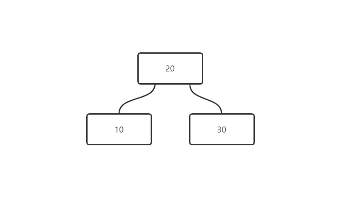
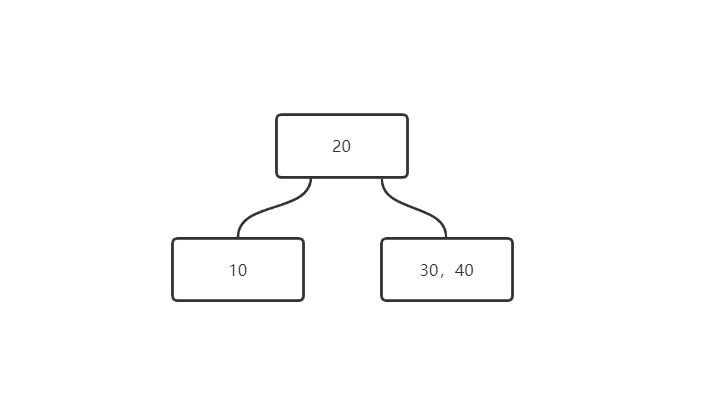

一、二叉平衡排序树的性能是极致吗？如果我们要提升二叉排序树的性能该如何做？
- 不是
二、影响二叉排序树性能的点在哪？
在于二叉平衡排序树只能由两个叉，导致在节点铺满的时候也会有很多层
希望可以一个节点存多个数，可以提升空间的性能
二、如何才能让查找的效率尽可能的少？
- 树的层级越少，查找效率越高
三、如何使二叉排序树的层数变得更少？
- 如果不是二叉，层数会变得更少
四、234树的概念
1、叉越多，层数越少，但是叉越多，树的结构越复杂，这样就需要一个平衡点，这个平衡点既让树的层数少，又让树的结构不复杂
2、数学家算出来这个平衡点是4，所以产生了一种树，叫234树
五、234数排序
- 每个节点最多放三个数
- 三个数产生四个区间，既四个叉
- 当向一个节点存入第四个数时，节点裂开中间

- 第四个数和根节点比较，小于根节点进入左子树，大于根节点进入右子树

六、234树优点
234树子节点永远在最后一层
234树永远是平衡的(每个路径高度都相同)
七、234树缺点
分支多了，复杂度上升，希望对234树进行简化
希望简化为二叉树，希望依旧保留多叉，希望依旧单节点存放多个值
这些希望就导致了红黑树 的产生